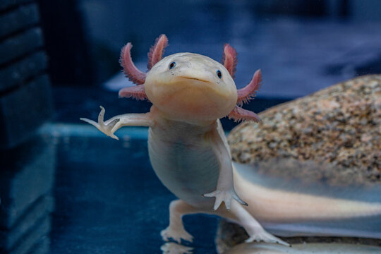

El Ajolote es un anfibio mexicano famoso por su capacidad de regenerar partes de su cuerpo.

• Vive en agua dulce. • Tiene branquias externas que parecen plumas. • Mide entre 15 y 30 cm. • Color rosado, negro o gris. • Puede regenerar patas y órganos.
El ajolote es originario de México y es muy estudiado por científicos debido a su gran capacidad de regeneración.